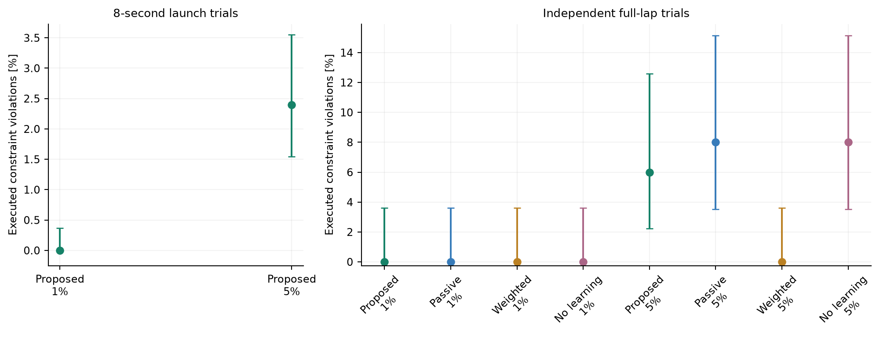
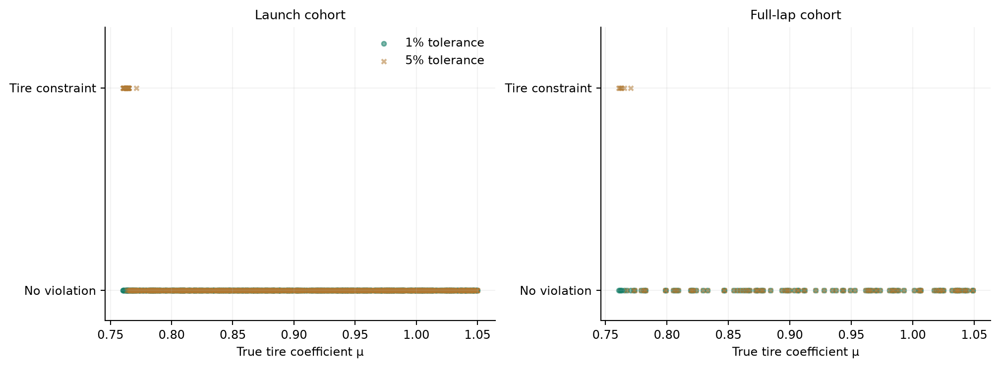
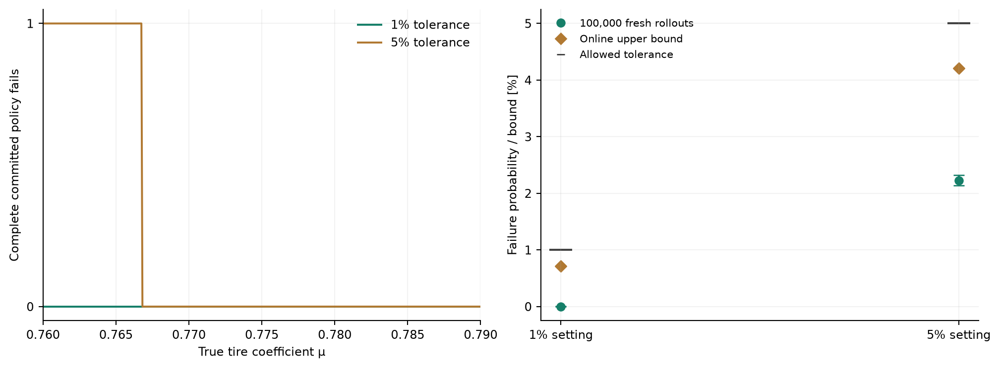
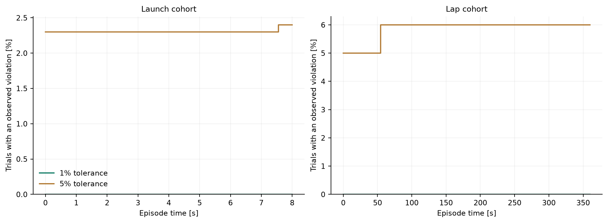
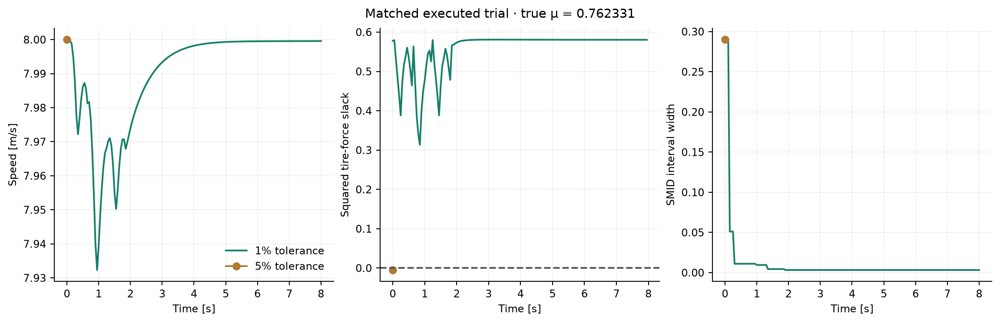
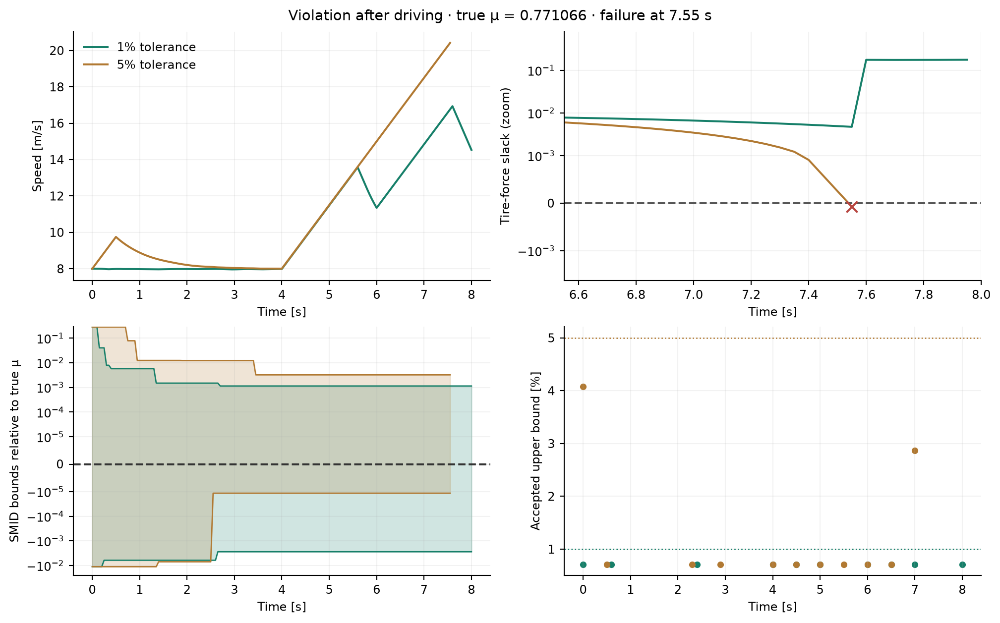
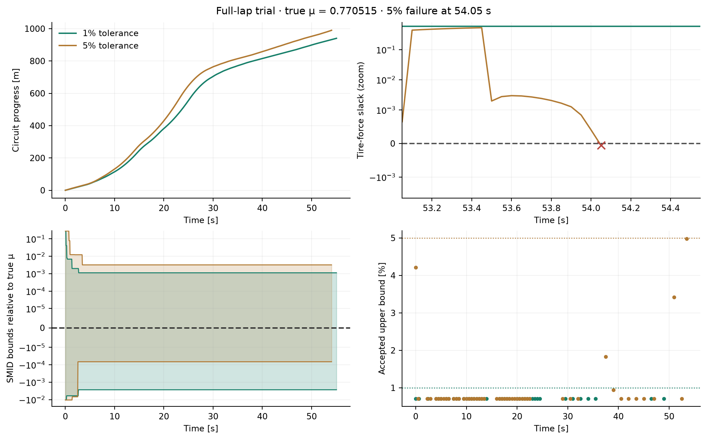

All results · Current replay
Launch stress: 1,000 trials per tolerance
Historical implementation. These runs used the earlier finite candidate library. They are preserved evidence, not validation of the current MPPI controller.
2,800 executed episodes: 2,000 eight-second launches and 800 full-lap attempts. Initial friction is IID Uniform[0.76, 1.05].
Executed safety outcomes
“No violation” means no modeled constraint violation during the tested horizon. Launches last eight seconds; they are not complete laps. Tire-force violations are infeasible force requests, not simulated crashes. Confidence intervals below are two-sided 95% Clopper–Pearson intervals.
Certificate-unavailable outcomes, audit errors and SMID exclusions were zero in every listed cohort. Candidate tolerances apply per certification decision, not per episode.
Every episode · Every failure · Failed-policy rechecks · Frozen protocol and seeds
Figures

01 executed failure rates · PNG · PDF
02 failures vs true friction · PNG · PDF
03 accepted nonzero risk · PNG · PDF
04 time to violation · PNG · PDF
05 matched failure trace · PNG · PDF
06 failure after driving · PNG · PDF
07 full lap failure · PNG · PDF